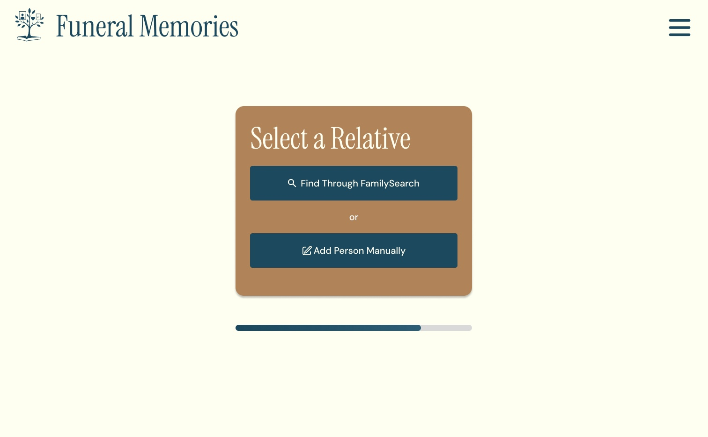
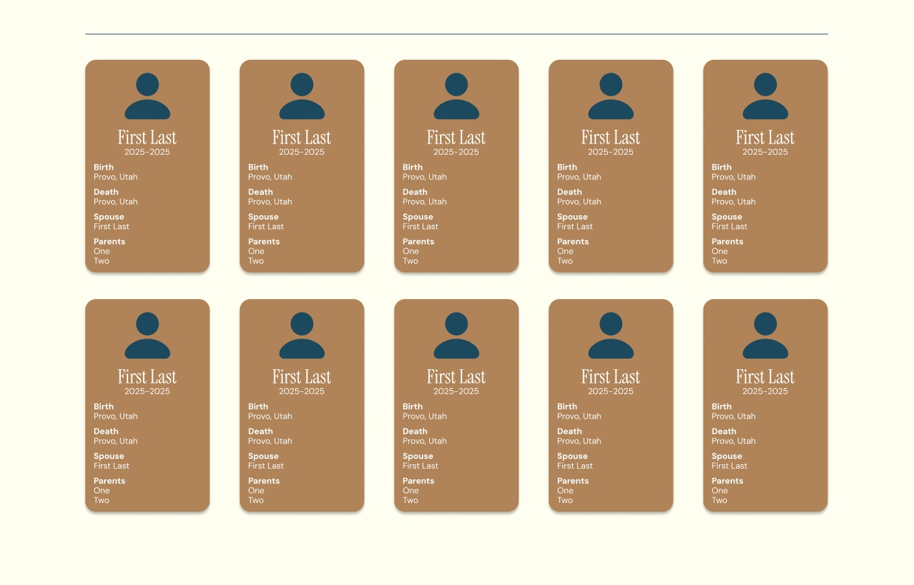
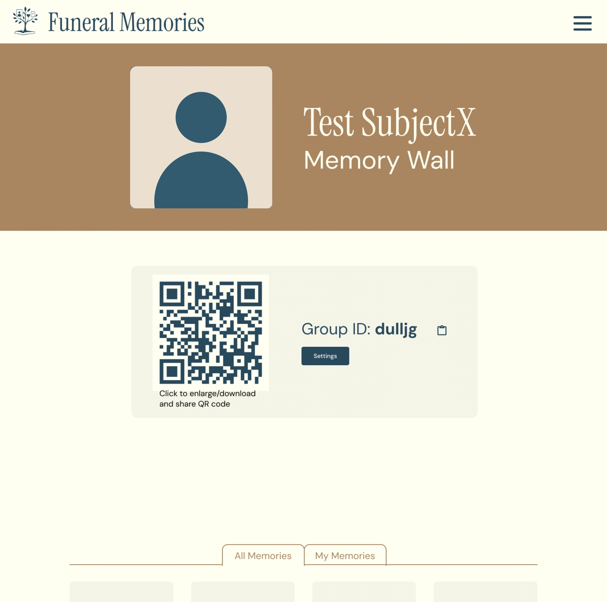
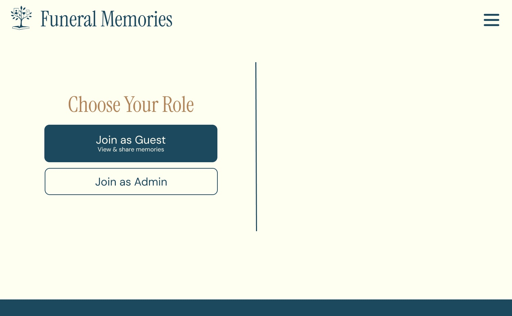
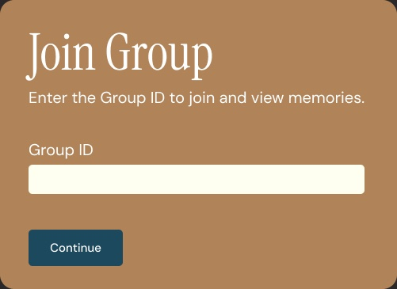
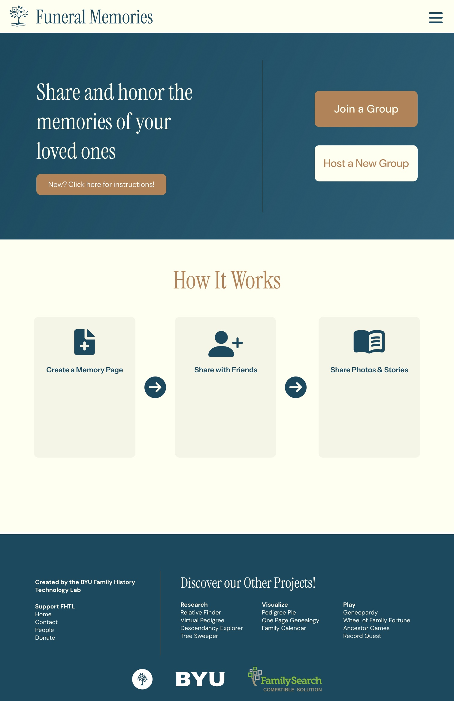
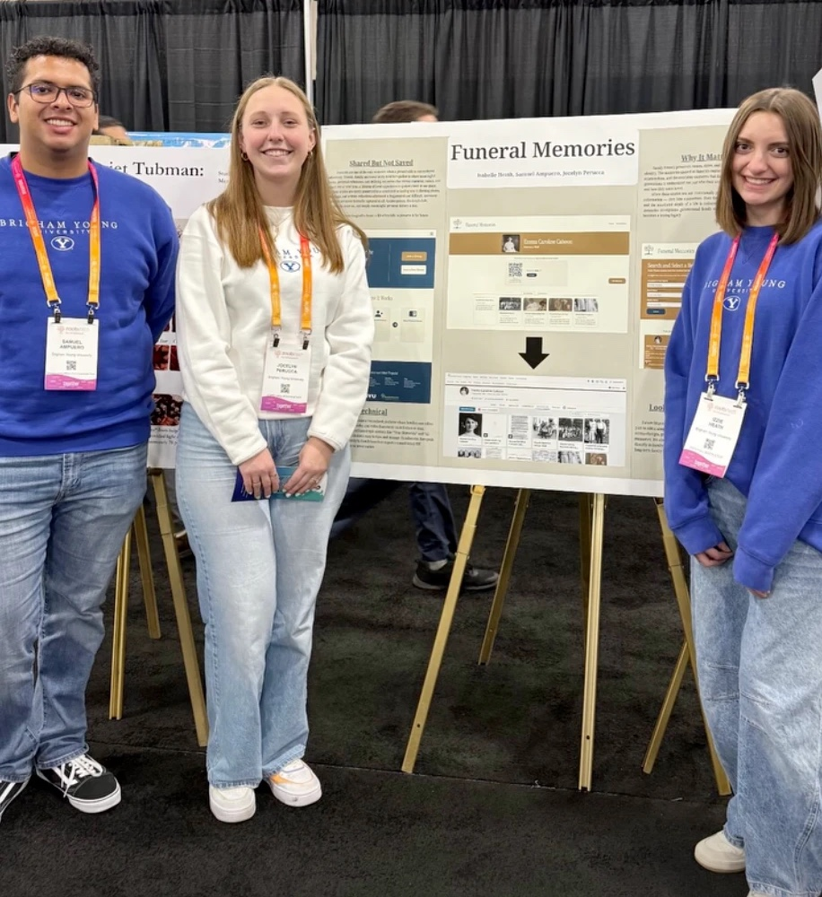
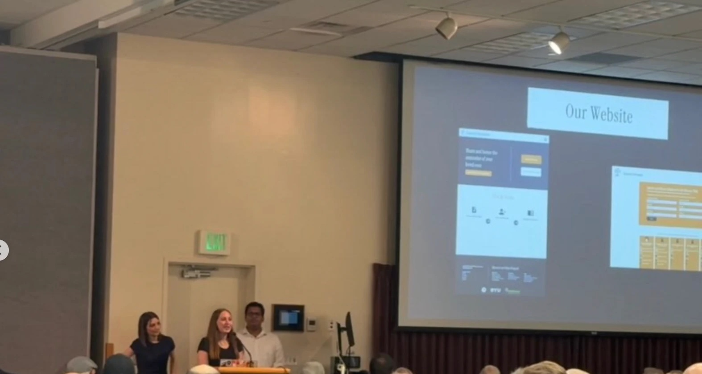

Color and type with warmth
Default Bootstrap blue and green gave way to deep teal, warm tan, and soft cream. Headings use Instrument Serif, with DM Sans for everything you read or tap.
A shared memory wall where family and friends add photos and stories to honor a loved one. I designed every screen in Figma and built the front end in TypeScript, CSS, and React. It’s live now.

Funeral Memories is a shared space for preserving and celebrating the life of a loved one. A host creates a memory wall for the person being honored, and family and friends add photos and stories to it.
It connects to FamilySearch, so hosts can find the person there. Afterward the wall can be exported as a PDF or published to FamilySearch.
Set up a dedicated page for your loved one with a title, details, and access settings.
Invite close family and friends so everyone can contribute meaningful stories together.
Collect cherished photos, memories, and messages in one place that can be revisited anytime.
Publish the memories to FamilySearch so your family history can be preserved in one lasting place.
The lab already had a working version. It did the job, but it lacked the warmth and professionalism the lab wanted for this industry, so they asked me to redo the UI.
Color and type with warmth
Default Bootstrap blue and green gave way to deep teal, warm tan, and soft cream. Headings use Instrument Serif, with DM Sans for everything you read or tap.
A cleaner, calmer layout
Each screen got more space, a clear heading, and one focused card. The old green header and white pages became a cream header and generous margins.
Custom CSS instead of Bootstrap styles
In the code, I replaced Bootstrap’s default styling with a CSS system of my own, organized by page and component, and rebuilt the pages in React and TypeScript.
Setup runs through a short series of cards, and a progress bar under each one shows how far along the host is.



The wall shows its Group ID with a copy button, plus a QR code that can be enlarged, downloaded, and shared.
Tabs switch between every memory on the wall and the ones you added.
Only the person who wrote a memory can edit or delete it, unless an admin removes it. Hosts can export the wall as a PDF or publish it to FamilySearch. Publishing deletes the wall, so export first.
Everyone starts by choosing a role. Guests can view and share memories with just the Group ID. Admins also sign in with the email and password they saved.


Deep teal and warm tan on a soft cream page, with a condensed serif for headings and a clean sans for everything you read or tap.
Teal#1C495E
Hero, buttons, text
Tan#B08459
Headers and cards
Cream#FFFFF0
Page
Stone#F5F5E6
Tiles and panels

I presented the project at the 2026 BYU Family History Workshop and at RootsTech 2026.


people across RootsTech and BYU, where I presented the project.
Funeral Memories is live. More case studies are on the way.